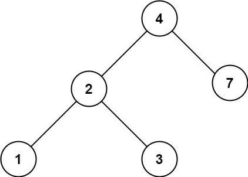

700. 二叉搜索树中的搜索
迭代下行：当前值大了往左、小了往右，BST 的有序性保证每步都能安全丢掉一半。
思路
- BST 性质：任意结点左子树全部更小、右子树全部更大。
val < root.val整个左子树才可能有答案，val > root.val整个右子树才可能有答案，一路迭代下行，不用递归栈。- 走到空说明不存在，返回
null；命中就返回该结点（以它为根的整棵子树）。 - 树高
h：随机树约O(log n)，最坏退化成链是O(n)。
图解
最优解
1class Solution {2 public TreeNode searchBST(TreeNode root, int val) {3 // BST 性质：左子树都小、右子树都大，val 小了往左、大了往右4 while (root != null && root.val != val) {5 root = val < root.val ? root.left : root.right;6 }7 return root;8 }9}题目
给定二叉搜索树（BST）的根节点 root 和一个整数值 val。
你需要在 BST 中找到节点值等于 val 的节点。 返回以该节点为根的子树。 如果节点不存在，则返回 null 。
示例 1:

输入：root = [4,2,7,1,3], val = 2 输出：[2,1,3]
示例 2:

输入：root = [4,2,7,1,3], val = 5 输出：[]
提示：
- 树中节点数在
[1, 5000]范围内 1 <= Node.val <= 107root是二叉搜索树1 <= val <= 107
题面取自力扣当前版本。
数据快照 2026-11-04。题面版权归力扣所有，本站点仅供本人学习使用，请勿对外发布。